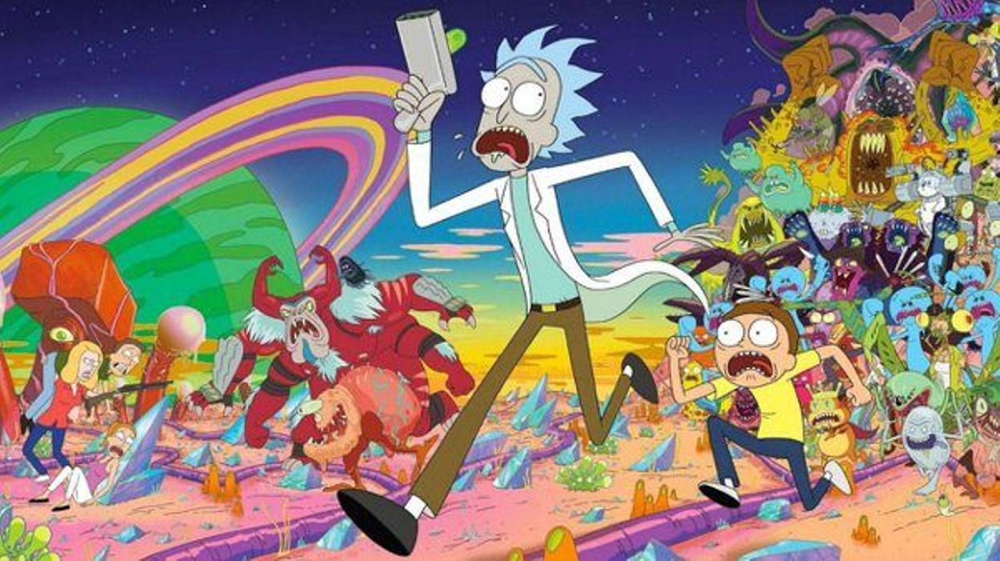

Rick et Morty
Bienvenue Morty !!
QUOI DE NEUF, MES GLIP-GLOPS?
Articles
Garnitures à pizza en deux dimensions
"OUAIS, JE VOUDRAIS COMMANDER UN GRAND TÉLÉPHONE AVEC DES TÉLÉPHONES SUPPLÉMENTAIRES, S'IL VOUS PLAÎT." NON-NON-NON-NON, ROTATIF! ET UN TÉLÉPHONE PAYANT À MOITIÉ."
Dans «Fermez les comptoirs Rick du Rick Kind». Chaque fois que Rick et Morty visitent une autre dimension, c’est la même situation, mais très différente. Des tranches de pizza sur des chaises commandent une pizza au téléphone. Ensuite, les téléphones assis sur des tranches de pizza commandent une pizza sur une chaise au téléphone. Enfin, dernier point mais non le moindre, des chaises assises sur des personnes commandent une pizza téléphonique sur une pizza téléphonique.
Contrebande de graines rares
"TU DOIS LE FAIRE POUR GRAND-PÈRE, MORTY. TU DOIS METTRE CES GRAINES DANS TES FESSES."
Il n’ya vraiment aucune limite à ce que Rick demandera à Morty de faire pour lui. Quand il veut ramener chez lui des graines rares qu'il trouve dans une autre dimension, il demande simplement à Morty de les élever. Et comme Morty est si triste et désespéré d’approuver sa candidature, il ne se battra pas beaucoup et permettra que cela se produise bien que peu convaincant. C’est le moyen le moins agréable de devenir un passeur intergalactique comme Han Solo.
Sur les pirates du pancréas
"SI J’AI SEMBLÉ UN PEU SUR LA DÉFENSIVE, C’EST PARCE QUE PIRATES DU PANCRÉAS ÉTAIT MON BÉBÉ. J'AI EU BEAUCOUP DE RÉSISTANCE QUAND JE L'AI LANCÉ, MORTY. JE SUPPOSE QUE JE SUIS TOUJOURS UN PEU SUR LA DÉFENSIVE. "
"Anatomy Park" était une base idéale pour un épisode, alors que Rick rétrécit Morty et l’envoie dans le parc à thème minuscule qu’il a construit dans le corps d’un homme sans abri. Sa défense de la course de Pirates du Pancréas est étonnamment pertinente, car nous avons tous été pris au dépourvu par des idées qui nous semblaient étonnantes et que le reste du groupe détestait. Rick ne l’a pas non plus blanchie, ce qui est admirable.